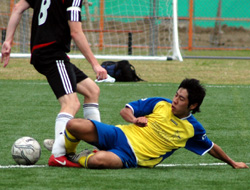
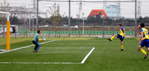
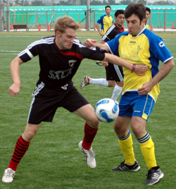
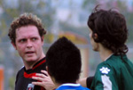

|
Soga, Saturday 18th October
Unfortunately, not the classic metal band of the 90s, fronted by long-haired rock god Sebastian Bach, but the place where Sala FC's season, thus far, has ended up. In a big pile of man poo would be another way to describe that place.
Having started the season with an absolute gubbing at the hands of YCAC, Sala had scraped together two victories against Saitama Jets and BEFC, played out a dismally flat draw with Swiss Kickers, lost a few more guys to injury and irritated the TML with a scandalous lack of match reports!! What more could go wrong???
Defeat to those lovely lads, the Wall Street Geckoes?? Surely not.
Well truly the footy gods have turned their back on the wee boys from Chiba as Geckoes deservedly ran out winners, taking all 3 points back to Wall Street. That is if that bastion of finance still exists. Or perhaps it is now in that big pile of man poo too?
Who knows?? Not I!
The match itself was a tawdry affair with Sala's passing game apparently in rehab after too much good work last year, and the Geckoes playing well, hitting their strikers early and supporting in numbers, but not creating too many clear cut chances. Most of Geckoe's good work leading to corners with Brian Harlow putting in a great shift in goal for Sala.

The quality of the game was mirrored by the quality of the 3 goals. All of them crap. Toby Long, who has been one of the few bright spots for Sala this season, pounced on an unusually sloppy pass at the back by Jonathan Smith, rounded the keeper, albeit a tad fortunately, and calmly slotted home under pressure from a defender. Not as good as any of his other 3 goals this year but they all count.
Geckoes then scored after a series of their aforementioned corners with the ball skidding off the keeper's hands and bouncing into the net. A player on the line would have saved the day, but the goal alas t'was not to be stopped. Geckoes scored the winner in the second half after some horrendous defensive play at the back by Sala. A goal kick was played out short, the ball was given up under pressure and after a bit of a rammy in the box a Geckoes striker put home the loose ball. Geckoes 2-1.
Sala pressed for an equaliser until the end but with little mojo and even less creative juice they only suceeded in producing a few wayward shots that didn't really trouble the Geckoes. Tawdry. Sorry, just wanted to use an under utilised adjective again.

Man of the Match - Kaz (Geckoes)
And that as they say is that.
Match report by Scotty not Roddy
|